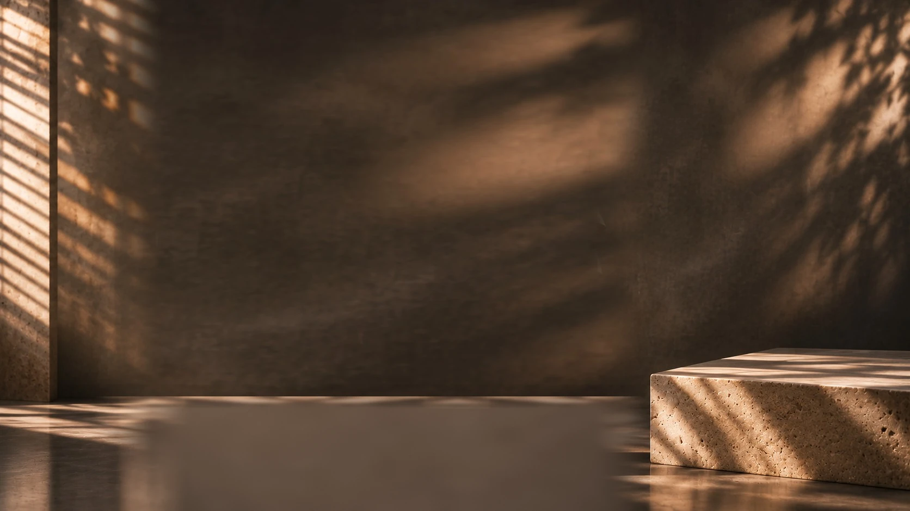
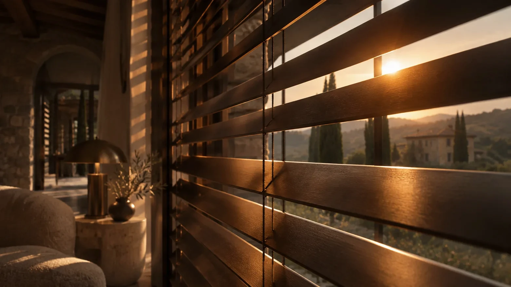

S.A.C. / Company
Made with
intention.
Production-oriented thinking with a quiet respect for space, product and the people who use it.
A company perspective
A well-designed system connects the architect's intent with the reality of making, fitting and using it.

Beyond the
surface.
S.A.C. Assembly operates in the field of window-covering, shading and insect-screen solutions. The company is based in Zrenjanin, Serbia.
This concept describes our desired presentation standard: consider the material, understand the system and make specification easier for partners and clients.
Explore the collection ↗How we approach a project / proposed workflow
01
Understand.
Start with the opening, the context and what the customer needs.
02
Specify.
Identify system, material, operation and essential constraints.
03
Prepare.
Confirm dimensions, components, production details and checks.
04
Support.
Plan for delivery, installation information and serviceability.